Блог о ментальном здоровье
Понятные техники самопомощи и доказательные подходы — простым языком.
Здесь мы разбираем состояния, с которыми люди чаще всего остаются один на один: тревогу и панические атаки, бессонницу, депрессию и апатию, выгорание, одиночество, расставания и утрату. Каждая статья устроена одинаково: что это такое, почему возникает, как проявляется, что можно сделать прямо сейчас, что работает вдолгую и в какой момент нужен специалист.
Материалы готовит команда AI Therapist на основе публикаций ВОЗ, NHS, NIH и Американской психологической ассоциации — со ссылками на первоисточники в конце каждого текста. Мы не ставим диагнозы и не выдумываем экспертов: как именно устроена работа над статьями, написано на странице о проекте. Тексты носят просветительский характер и не заменяют консультацию врача или психотерапевта.
🧠 Тревога и спокойствие
Разобраться в теме целиком: Тревожное расстройство — виды, симптомы и лечение — справочник по всем формам тревоги и карта материалов раздела.
Как справляться с тревогой, паникой, навязчивыми мыслями и вернуть себе сон.
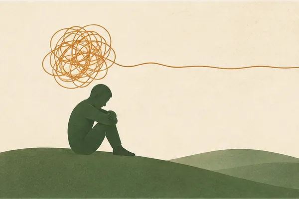
ТревогаКак справиться с тревогой: 8 техник, которые реально помогают
Дыхание, заземление, работа с тревожными мыслями по КПТ и другие приёмы, которые можно применить прямо сейчас — и когда стоит обратиться к специалисту.
Читать →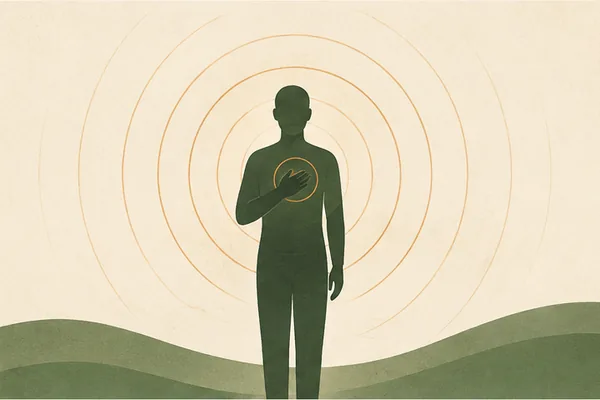
ПаникаПаническая атака: что делать в момент приступа
Почему паника не опасна, как отличить её от инфаркта и пошаговый алгоритм, что делать прямо сейчас.
Читать →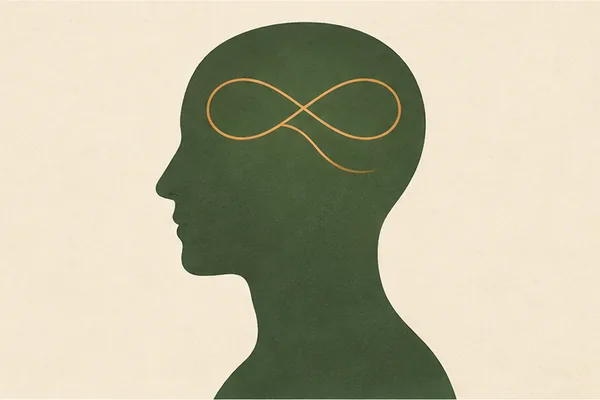
Навязчивые мыслиНавязчивые мысли: почему появляются и 7 способов их остановить
Что такое навязчивые мысли и руминация, чем они отличаются от ОКР, 7 техник, как ослабить их власть, и когда нужен специалист.
Читать →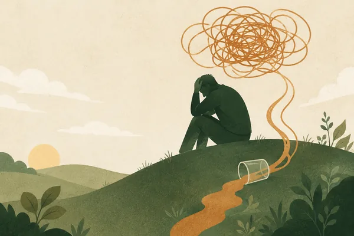
АлкогольАлкоголь и тревога: почему наутро хуже и как выйти из круга
Почему бокал снимает тревогу на час и возвращает её сильнее, что такое похмельная тревога, 7 шагов из круга и почему резко бросать при ежедневном употреблении опасно.
Читать →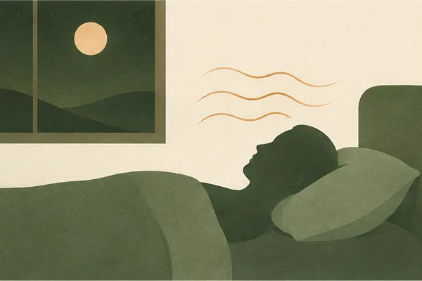
СонБессонница при тревоге: почему не спится и что делать
Почему тревога ворует сон, что сделать прямо сейчас, чтобы уснуть, гигиена сна и метод КПТ-бессонницы.
Читать →🌧 Настроение и депрессия
Когда пропали силы, интерес и радость: как отличить усталость от депрессии, что делать осенью и когда пора к врачу.
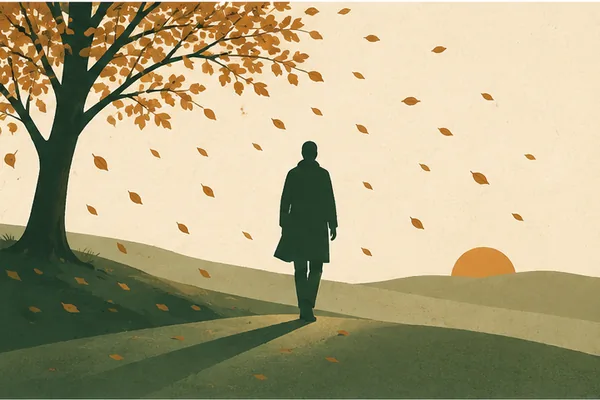
Осенняя депрессияОсенняя депрессия: почему накрывает осенью и 8 способов справиться
Чем сезонная депрессия отличается от осенней хандры, почему на коротком дне нет сил и хочется спать, как работает светотерапия, нужен ли витамин D и 8 шагов на тёмные месяцы.
Читать →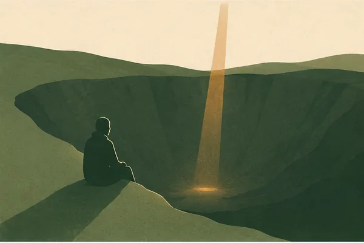
ДепрессияДепрессия: 10 признаков, что делать и когда идти к врачу
Чем депрессия отличается от плохого настроения, выгорания и апатии, 10 симптомов, экспресс-проверка, 8 шагов, как помочь близкому и когда нужна помощь врача.
Читать →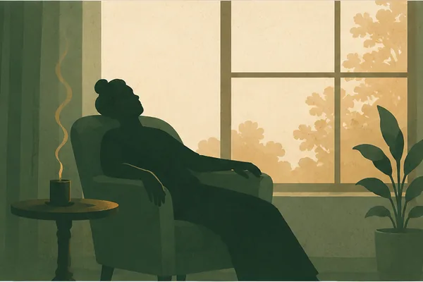
АпатияАпатия: почему нет сил и ничего не хочется — и что делать
Чем апатия отличается от лени и депрессии, почему пропадают силы и желания, 7 шагов вернуть энергию, частые ошибки и когда пора к специалисту.
Читать →🕯 Горе и утрата
Когда умер близкий человек: как проживать горе самому и как поддержать того, кто его переживает.
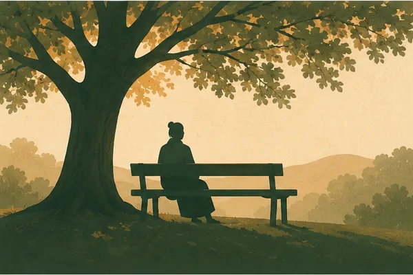
УтратаКак пережить смерть близкого человека: 9 шагов, которые помогают
Сколько длится горе, почему этапы не идут по порядку, что делать в первые дни, как справиться с чувством вины, что говорить горюющему и когда горе становится осложнённым.
Читать →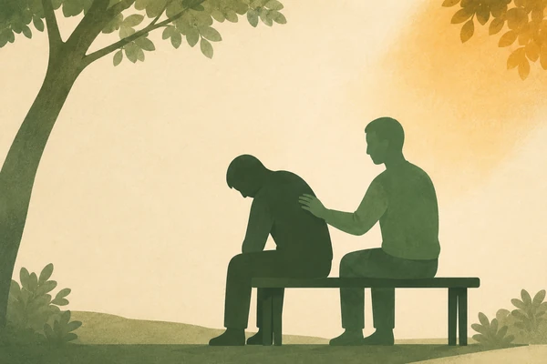
Поддержка близкогоКак поддержать человека в горе: что говорить и чего не говорить
Что написать в первые часы, какие фразы ранят и чем их заменить, как помочь делами и как поддерживать через месяцы, когда все уже разошлись.
Читать →💼 Работа и выгорание
Рабочий стресс, перегрузки, откладывание дел и как не довести себя до выгорания.
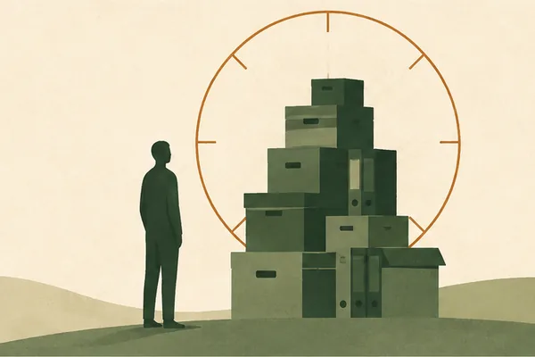
ПрокрастинацияПрокрастинация: почему вы откладываете дела и 7 способов перестать
Почему мы откладываем важные дела, чем прокрастинация отличается от лени, цикл откладывания, мифы и 7 рабочих способов из него выйти.
Читать →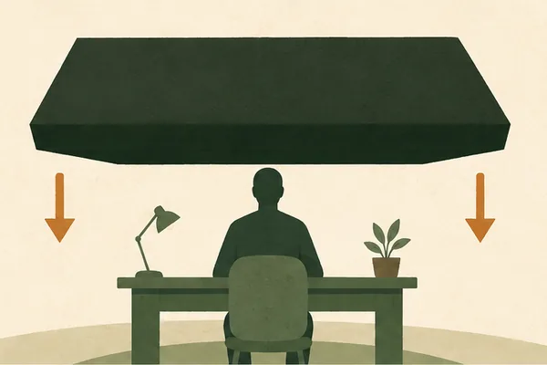
СтрессСтресс на работе: 8 способов справиться и не выгореть
Почему накрывает рабочий стресс, как понять, что он перешёл черту, 8 способов справиться в моменте и что делать в долгую, чтобы не выгореть.
Читать →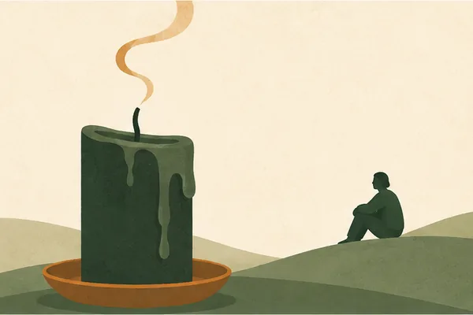
ВыгораниеЭмоциональное выгорание: 5 стадий, признаки и как восстановиться
Признаки и стадии выгорания, чем оно отличается от усталости и депрессии, и пошаговый план восстановления.
Читать →💚 Самооценка и уверенность
Как перестать себя обесценивать, поднять самооценку и присвоить свои успехи.
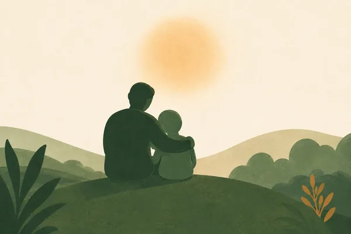
Детские травмыДетские травмы: 7 следов во взрослой жизни и что с ними делать
Почему повторяются одни и те же отношения, откуда берутся стыд и сверхбдительность, что показывает шкала ACE и почему высокий балл — не приговор.
Читать →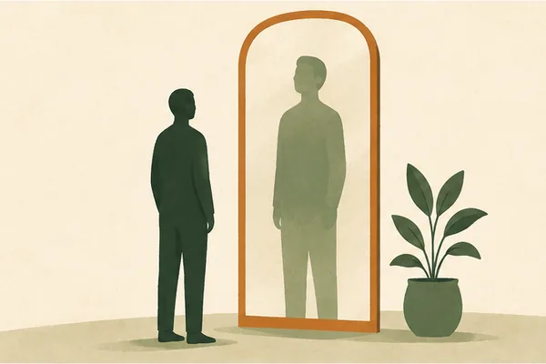
СамооценкаКак повысить самооценку: 8 шагов, которые реально работают
Что такое самооценка, почему она занижается, признаки низкой самооценки, быстрый тест и 8 рабочих шагов, чтобы поднять уверенность в себе.
Читать →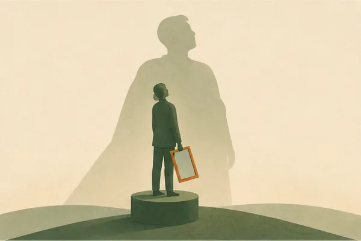
Синдром самозванцаСиндром самозванца: 7 способов перестать чувствовать себя обманщиком
Почему возникает синдром самозванца, как он проявляется, 5 типов самозванца и 7 способов перестать обесценивать свои успехи — и когда нужен специалист.
Читать →💞 Отношения и расставания
Как распознать разрушительные отношения, проживать разрыв, справляться с одиночеством и возвращаться к себе.
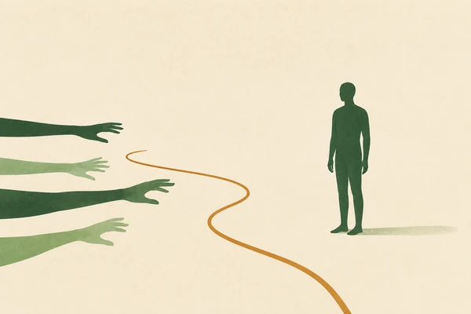
Личные границыЛичные границы: 8 шагов, чтобы перестать всем угождать
Чем граница отличается от просьбы и ультиматума, как понять, что их не хватает, пять формул отказа и что делать, когда близкие сопротивляются.
Читать →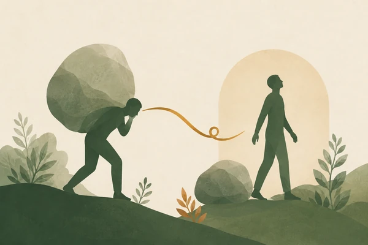
Вина и стыдПостоянное чувство вины: 7 шагов, чтобы перестать себя грызть
Чем вина отличается от стыда, как отличить здоровую вину от токсичной, откуда берётся хроническое самообвинение и 7 шагов, чтобы перестать себя грызть.
Читать →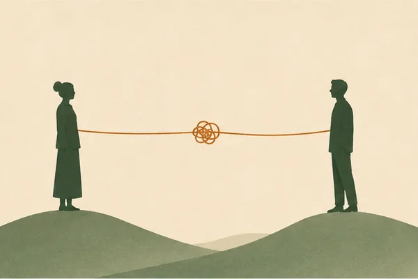
Токсичные отношенияТоксичные отношения: 12 признаков и как из них выйти
Чем токсичные отношения отличаются от трудных и абьюзивных, 12 признаков, газлайтинг и цикл качелей, почему так трудно уйти, 8 шагов и как выйти безопасно.
Читать →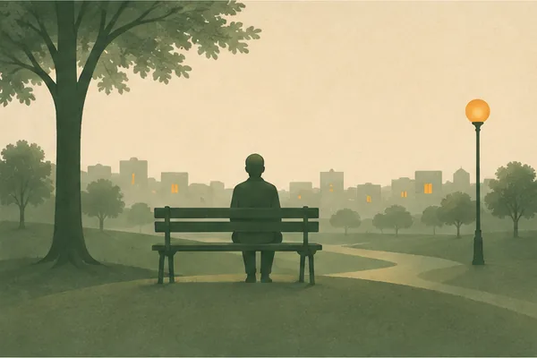
ОдиночествоКак справиться с одиночеством: 8 шагов, когда рядом никого нет
Почему становится одиноко даже среди людей, чем одиночество отличается от уединения, чем опасно хроническое одиночество и 8 шагов, чтобы вернуться в контакт с людьми.
Читать →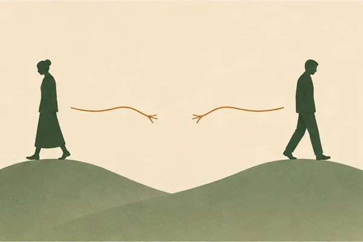
РасставаниеКак пережить расставание и отпустить человека: 8 шагов
Почему после разрыва так больно, сколько длится боль, что делать в первые дни, 8 шагов, чтобы отпустить человека, и ошибки, которые растягивают страдание на годы.
Читать →